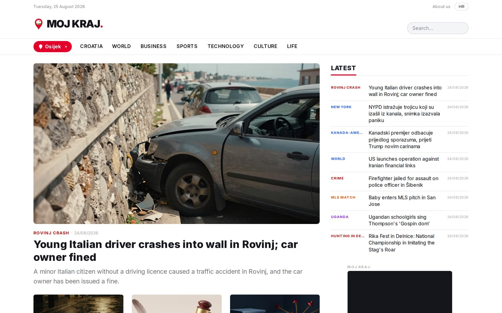
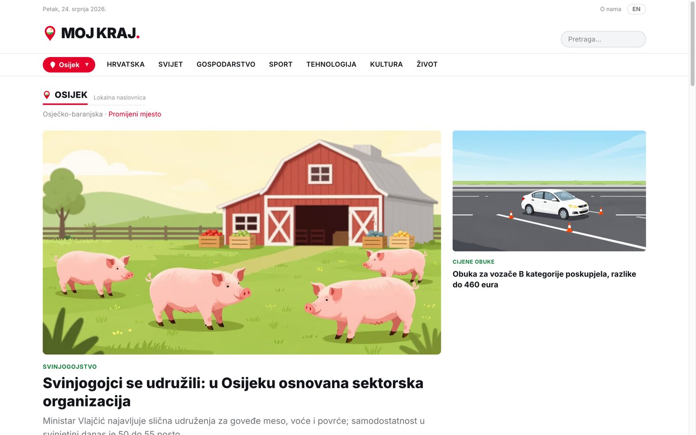
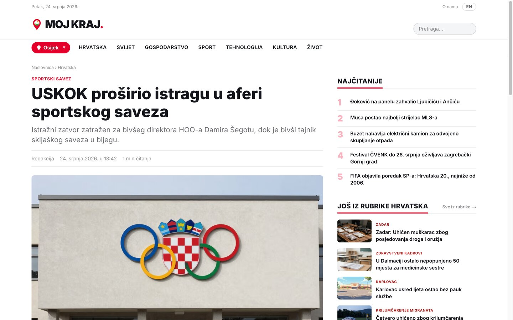

MOJ KRAJ. is a Croatian news portal run as a public experiment: can AI hold a newsroom to a higher bar than the average - every article written fresh from cited sources, every claim checked before it publishes - while also covering the towns big media abandoned? A machine doesn't have to pick only the profitable cities.



The live portal, English mirror: the national front page, a town's local edition, and an article.
MOJ KRAJ. came from two very different urges - one as readers tired of the noise, one as a studio curious how far AI goes when the bar is set deliberately high.
The average portal packages an ordinary event as drama, because the click matters more than the information. We wanted the opposite: a headline that says what happened, a body that backs it with a source, and then it stops.
"naslovom kaže što se dogodilo, tekstom to potkrijepi izvorom, i tu stane."
We work with applied AI every day, so the real question was how far it goes with the bar set high: can it run a newsroom more disciplined than average - one that writes each article fresh from the facts, checks every claim against its source, and grades itself before publishing?
The answer in progress: technology used not to cut costs at the reader's expense, but to raise the standard - with clear rules and human oversight.
Big media chase big topics, and most places in Croatia have nobody covering them. But a machine, unlike a newsroom, doesn't have to pick only the profitable cities.
So every city, island and county gets its own front page - regional news and neighbourhood service notices in one place. Short local announcements (road closures, outages, council notices) are relayed automatically as "Ukratko iz kraja"; anything with real news weight becomes a full, sourced article on that town's edition. It's the coverage national media skip, made reachable only because the cost of another front page is near zero.
Nothing reaches a reader without passing every stage. Generation is the easy part; the pipeline around it is what makes the output trustworthy.
News-agency wire, verified media feeds and official city and county communications flow into a raw queue - each item tagged with its origin and place.
A purpose-built newsroom agent writes an original Croatian article from the facts - inverted pyramid, house style, source attributed. Facts may come only from the cited source; quotes are never invented; sentences are never copied.
Every image passes a copyright check. If a permissive licence can't be positively verified, the portal generates its own illustration and labels it "Ilustracija: AI". No photoreal depictions of real people.
Before it can publish, every article runs a battery of automated screens - groundedness (each claim compared back to its source), neutrality (tone toward actors, balance of sources), specificity, fabricated-name detection, legal over-generalisation, spelling, vocabulary and grammatical agreement, plus a check that no generated image shows a real person's face. Five are deterministic, four are LLM graders; anything below threshold is held for a human.
An editor approves from a dense, operator-grade admin - or, per category, low-risk articles auto-publish. Either way a person owns the standard, and the whole thing runs in minutes a day.
The article goes live with structured news metadata for search, and geotagging drops it onto the right town's local front page as well as its topic section.
The experiment only means something if the rules are real. These are enforced in the pipeline, and stated openly to the reader.
A claim may come only from the article's cited source. Quotes are never fabricated. Every article is rewritten in original Croatian - facts are free, expression is copyrighted, and it's respected as such.
AI-made illustrations carry "Ilustracija: AI". Sponsored material is marked "SPONZORIRANI SADRŽAJ" with the partner named, and never mixed into editorial choices. The reader always knows what they're looking at.
A public corrections address, source links on every article, and a full impressum. Accuracy over speed is the stated rule - it's better that the news be right than first.
The rule the whole thing runs on: getting it right matters more than getting it first.
"važnije da vijest bude točna nego da bude prva" — from the MOJ KRAJ. About page
MOJ KRAJ. is the clearest version yet of a belief that runs through everything we build: when generation gets cheap, the value moves to the discipline around it - the sourcing rules, the groundedness and neutrality checks, the license gate, the human who owns the standard. It's the same thesis as our other work, pointed at one of the harder places to earn trust: the news. And it's a deliberate argument, in public, that AI can be used to raise a standard rather than quietly lower one - which is the only kind of AI product we're interested in building, for ourselves or for anyone else.
A pipeline that generates at scale but checks itself, cites its sources and labels its outputs - in your domain, your language, your standard. Read MOJ KRAJ. first, then let's talk about yours.